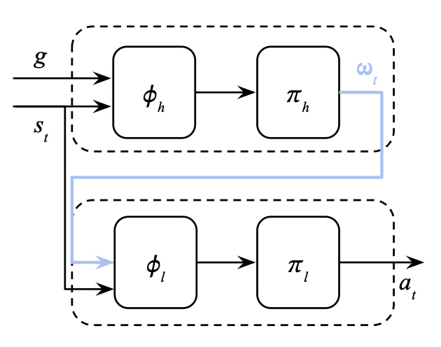
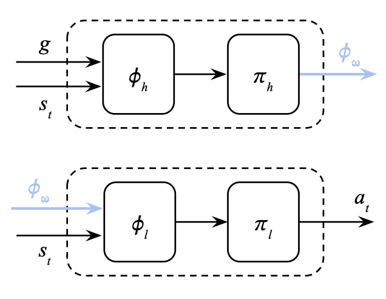
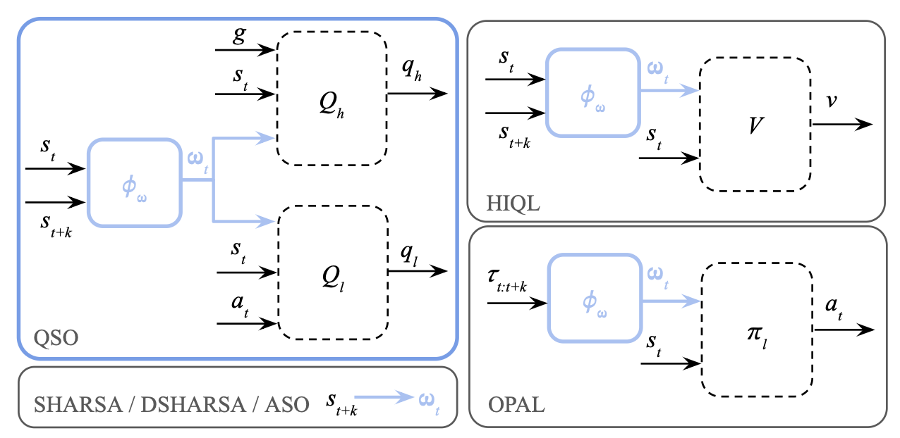
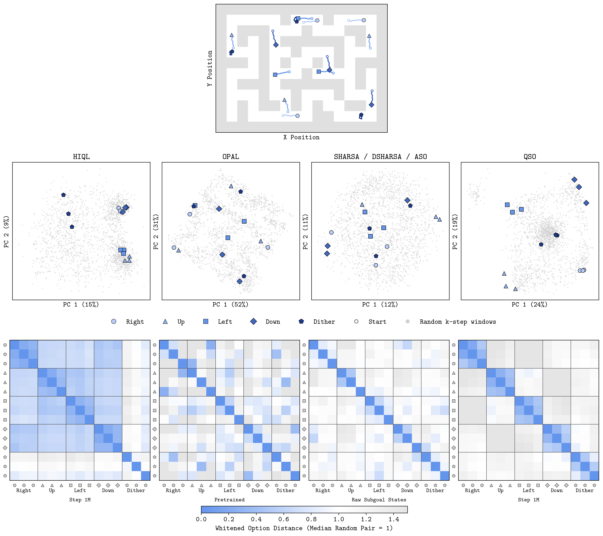
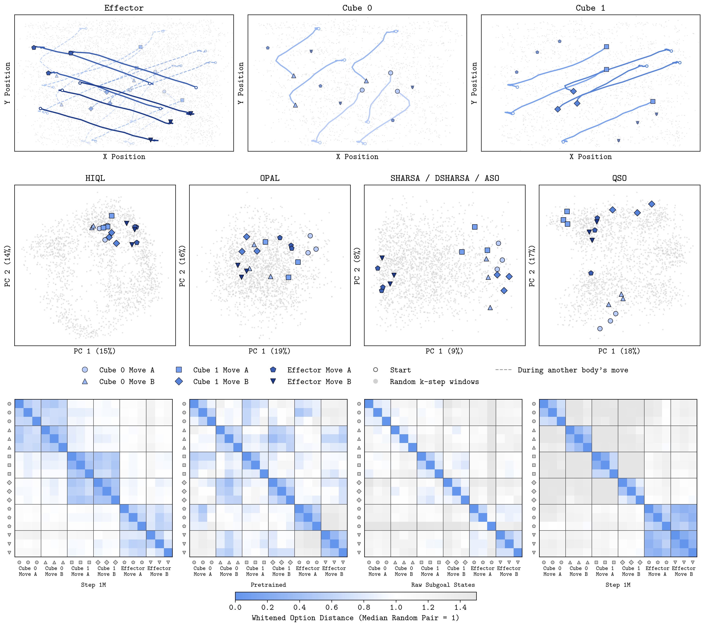
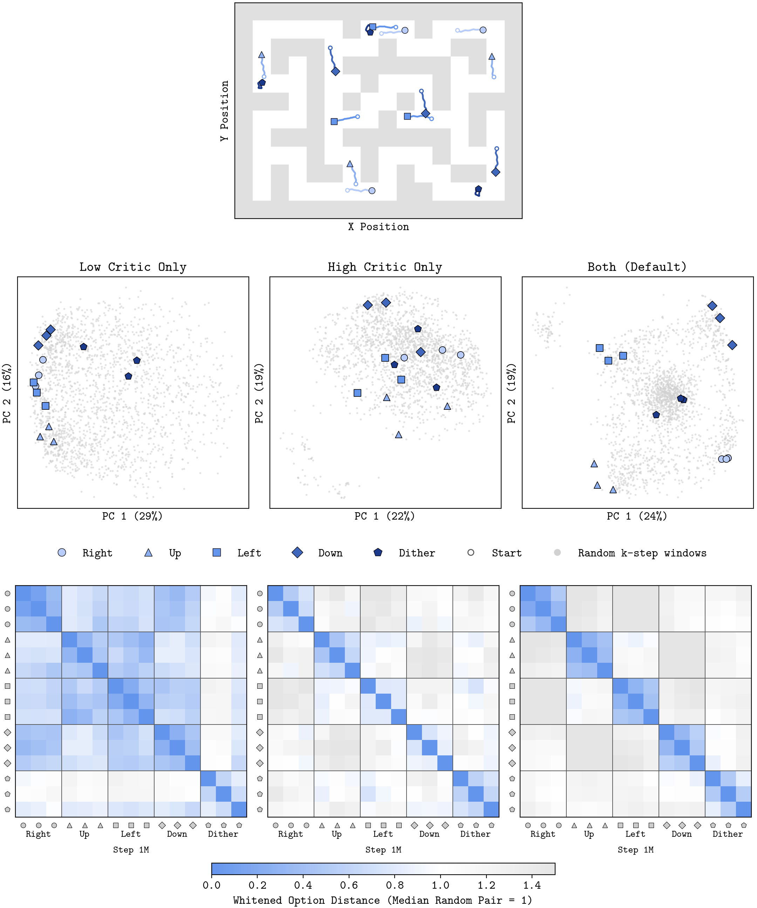
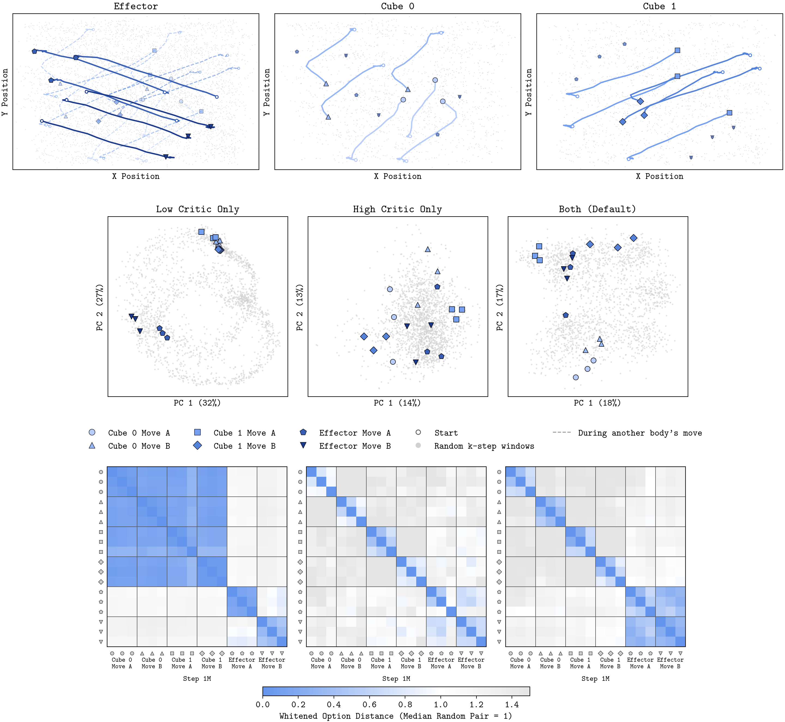

Q-Shaped Options for Hierarchical Reinforcement Learning
In this post, I will introduce three desiderata for action abstractions in Hierarchical Reinforcement Learning (HRL), as well as Q-Shaped Options (QSO), an algorithm designed to address all three.
Hierarchical Reinforcement Learning
Learning to tackle long-horizon, goal-conditioned tasks requires an agent to reason over extended timescales and act across a broad range of states.
In goal-conditioned two-tiered Hierarchical Reinforcement Learning (HRL) a high-level policy outputs a high-level action or option conditioned on the current state and goal; a low-level policy then conditions on this option as well as the current state to output a primitive action. In maze navigation, for example, the option might be to reach ''a point two metres down'', while the primitive action could be applying torques to an individual joint.

In principle, HRL addresses both challenges of long-horizon, goal-conditioned tasks through the interaction between action (temporal) and state (spatial) abstraction.
Firstly, by using an action abstraction to represent temporally extended behaviour as options, a hierarchical policy reduces the effective decision horizon. The high-level policy reasons over options instead of primitive actions, while the low-level policy reasons to pursue the option rather than the distant goal.
Secondly, by enabling different state abstractions at each level of the hierarchy, a hierarchical policy can achieve coarser state abstraction than a non-hierarchical policy if each level discards different information irrelevant to its part of the decision process. Intuitively, this permits greater data aggregation for learning. For example, the high-level can aggregate all examples at a certain coordinate irrespective of pose, which is too fine-grained for high-level control, while the low-level can aggregate all examples with a certain pose irrespective of coordinates, since reaching ''a point two metres down'' requires the same actions wherever the agent is.
The Problem
The problem is that realising these two benefits of a hierarchical policy depends on learning an appropriate action abstraction.
To improve stability and avoid collapsing to degenerate solutions (where options terminate at every step, or run to the end of the episode), decoupled approaches train each policy separately using fixed-length trajectory segments. The action abstraction maps these segments to the option space, serving as actions for the high-level policy and goals for the low-level policy during training.

The issue is that current HRL algorithms learn abstractions that fail in one of two ways.
Some discard distinctions between options that are needed for optimal control. For example, HIQL learns the action abstraction through its single action-free state-value function, but value equivalence does not imply action equivalence. This limits the quality of the recoverable policy and undermines hierarchy altogether.

Others retain distinctions between options that are irrelevant for control. For example, SHARSA and DSHARSA use Absolute Subgoal Options (i.e. they bypass learning an action abstraction by simply specifying the entire state that the low-level policy should reach). Similarly, OPAL uses a surrogate objective to learn an option space using a $\beta$-VAE trained to reconstruct the entire action sequence, meaning that the option encodes how a segment was executed, instead of its outcome. Both of these ''action abstractions'' preserve horizon reduction but forfeit coarser state abstraction, as functionally equivalent behaviours remain distinct outputs of the high-level policy and distinct inputs to the low-level one.
Action Abstraction Desiderata and Q-Shaped Options
We characterise three desiderata for an action abstraction to enable both horizon reduction and data aggregation. We also introduce QSO, to address all three. QSO builds on an architecture with separate state-value functions, Q functions and policies at each level of the hierarchy.
Desideratum 1. Represent outcome rather than execution.
To prevent potentially suboptimal dataset execution from becoming a part of the option's representation, we want the option to represent the outcome of a trajectory segment rather than the exact state-action sequence that produced it.
To address our first desideratum, we encode only the current and target states $(s_t, s_{t+k})$ to represent the outcome of a $k$-step trajectory segment $\tau_{t:t+k}$ rather than the exact state-action sequence that produced it.
Desideratum 2. Preserve distinctions between options necessary for optimal control.
We want two target states that require different actions from the same current state map to different options, so that a policy conditioning on the representation instead of the target state can still be optimal for both.
To address our second desideratum, we shape the abstraction jointly with the low-level Q function: $Q_l(s_t, \phi_\omega(s, s_{t+k}), a_t)$. Intuitively, if two admissible target states require different actions from the same current state, the low-level Q function must represent different sets of action values. Minimising the Bellman error therefore pressures the action abstraction to map the current and target state pairs to different points in the option space. In our paper, we introduce a formal definition of a control-sufficient action abstraction and prove that low-level Q shaping satisfies control-sufficiency (note that this is actually stronger than control sufficiency).
Desideratum 3. Discard unnecessary distinctions between options.
We want trajectory segments with similar outcomes to map to the same option, so that experience can be aggregated across the state space.
To address our third desideratum, we additionally shape the option space jointly with the high-level Q function: $Q_h(s_t, g, \phi_\omega(s_t, s_{t+k}))$. Functionally equivalent state-target pairs induce similar high-level action values, so distinguishing between them provides little predictive benefit to $Q_h$. Note that, unlike control sufficiency, this invariance is not explicitly enforced by the objective, instead simply providing an inductive bias towards it under shared function approximation and gradient-based optimisation. Empirically, we find that this is sufficient to form coherent clusters in the option space.
Experiments
We first evaluate QSO’s downstream performance when learning from a fixed offline dataset.
To assess our second and third desiderata, we introduce ASO, which shares QSO’s policy extraction but, like SHARSA and DSHARSA, uses absolute subgoal options instead of a learned action abstraction. This isolates the effect of QSO’s action abstraction: discarding distinctions necessary for control should yield a worse policy than ASO, whereas discarding only unnecessary ones should improve performance through greater data aggregation.
| Non-Hierarchical | Hierarchical | QSO / Best Mean |
|||||||
|---|---|---|---|---|---|---|---|---|---|
| Environment | IQL | QC | HIQL | OPAL | SHARSA | DSHARSA | ASO | QSO | |
| antmaze-giant-stitch-v0 | 0 [0, 0] | 0 [0, 0] | 54 [48, 60] | 53 [52, 55] | 68 [61, 76] | 72 [67, 77] | 68 [66, 70] | 68 [66, 70] | 94% |
| antmaze-teleport-stitch-v0 | 47 [44, 51] | 37 [32, 40] | 36 [34, 39] | 69 [64, 74] | 53 [52, 55] | 58 [55, 62] | 66 [62, 69] | 54 [52, 57] | 79% |
| humanoidmaze-giant-stitch-v0 | 1 [1, 1] | 0 [0, 0] | 6 [4, 8] | 82 [78, 85] | 30 [27, 33] | 30 [27, 32] | 44 [38, 48] | 90 [88, 92] | 100% |
| cube-double-play-v0 | 20 [17, 23] | 72 [70, 74] | 7 [5, 9] | 29 [26, 33] | 72 [68, 77] | 80 [75, 84] | 68 [65, 70] | 70 [65, 74] | 87% |
| cube-triple-play-v0 | 6 [6, 7] | 23 [19, 27] | 16 [14, 18] | 3 [2, 4] | 14 [10, 18] | 14 [13, 16] | 4 [4, 4] | 22 [20, 23] | 92% |
| cube-quadruple-play-v0 | 0 [0, 0] | 2 [1, 2] | 3 [1, 5] | 0 [0, 0] | 0 [0, 1] | 0 [0, 1] | 0 [0, 0] | 4 [4, 5] | 100% |
| scene-play-v0 | 48 [45, 51] | 82 [81, 83] | 41 [35, 46] | 84 [78, 87] | 92 [90, 93] | 89 [87, 91] | 94 [91, 95] | 85 [82, 90] | 91% |
| puzzle-3x3-play-v0 | 100 [99, 100] | 81 [46, 99] | 48 [46, 49] | 70 [65, 74] | 78 [71, 87] | 85 [81, 90] | 76 [72, 80] | 72 [69, 75] | 72% |
| puzzle-4x4-play-v0 | 71 [61, 78] | 25 [23, 27] | 0 [0, 1] | 64 [61, 68] | 74 [67, 79] | 72 [69, 75] | 69 [65, 75] | 92 [81, 100] | 100% |
| puzzle-4x5-play-v0 | 14 [11, 15] | 16 [13, 19] | 4 [3, 5] | 24 [22, 25] | 17 [15, 20] | 18 [18, 19] | 14 [11, 18] | 15 [11, 20] | 65% |
| puzzle-4x6-play-v0 | 8 [5, 10] | 16 [14, 19] | 5 [4, 6] | 17 [15, 18] | 14 [10, 16] | 16 [14, 17] | 11 [8, 15] | 18 [15, 22] | 100% |
| Average | 29 [27, 30] | 32 [29, 34] | 20 [20, 20] | 45 [44, 46] | 46 [44, 49] | 49 [48, 49] | 47 [46, 48] | 54 [51, 56] | 100% |
Table 1 shows that QSO achieves the highest average success rate across the 11 environments, 54% against 49% for the next best method (DSHARSA). Particularly notable is its performance in humanoidmaze, which has the largest action space dimension (21, against at most 8 in the other environments) where it achieves 90% against 82% for the next best method and three times that of DSHARSA. In puzzle-4x4 it achieves 92% against at most 74% for any baseline. In cube-quadruple, the hardest manipulation environment, QSO is the only method with non-zero success on two of the five tasks. QSO performs consistently across environments, achieving at least 65% of the best success rate in all environments, while every other algorithm drops below 35% of the best in at least one.
Is the action abstraction semantically meaningful?
We test whether QSO maps functionally equivalent behaviours to similar parts of the option space by identifying groups of semantically similar behaviours. For each behaviour, we randomly sample trajectory sequences from the validation dataset and compare PCA projections and whitened distances of their encodings. An invariant encoder should produce a clear block-diagonal similarity structure. As depicted in Figures 4 and 5, QSO exhibits this structure across both the locomotion and manipulation environments, whereas HIQL also assigns high similarity between behaviour groups, and OPAL and absolute subgoal options produce low similarity within behaviour groups.


How necessary is joint option shaping by both the high and low-level Q functions?
Joint shaping is important for both the learned action abstraction and downstream performance. As shown in Figures 6 and 7, neither Q function alone recovers the clean semantic structure obtained when both are used. We refer to our paper for the downstream RL performances.


What's Next?
Firstly, extending to the online setting, i.e. using the hierarchical policy to do more targeted exploration for ''maximally useful'' data collection.
Secondly, addressing stochastic environments, i.e. using progress-adaptive high-level control to reduce the optimistic bias that arises when the high-level critic evaluates an option conditioned on its realised outcome, a limitation shared by all hindsight-based hierarchical methods, including HIQL, OPAL, SHARSA and DSHARSA.
Finally, adapting QSO to language, i.e. using goal-conditioned Q-shaping to learn latent abstractions from text.